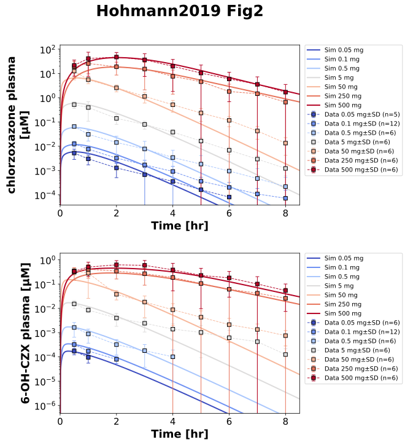
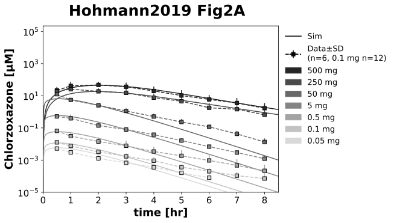
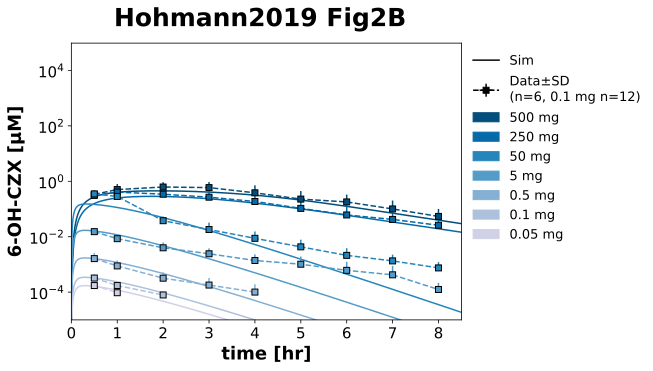

Overview
Models
| model | source |
|---|---|
| model | chlorzoxazone_body_flat.xml |
Datasets
| dataset | file |
|---|---|
| czx_0p05 | datasets/Hohmann2019_czx_0p05.tsv |
| czx_0p1 | datasets/Hohmann2019_czx_0p1.tsv |
| czx_0p5 | datasets/Hohmann2019_czx_0p5.tsv |
| czx_5 | datasets/Hohmann2019_czx_5.tsv |
| czx_50 | datasets/Hohmann2019_czx_50.tsv |
| czx_250 | datasets/Hohmann2019_czx_250.tsv |
| czx_500 | datasets/Hohmann2019_czx_500.tsv |
| czx6oh_0p05 | datasets/Hohmann2019_czx6oh_0p05.tsv |
| czx6oh_0p1 | datasets/Hohmann2019_czx6oh_0p1.tsv |
| czx6oh_0p5 | datasets/Hohmann2019_czx6oh_0p5.tsv |
| czx6oh_5 | datasets/Hohmann2019_czx6oh_5.tsv |
| czx6oh_50 | datasets/Hohmann2019_czx6oh_50.tsv |
| czx6oh_250 | datasets/Hohmann2019_czx6oh_250.tsv |
| czx6oh_500 | datasets/Hohmann2019_czx6oh_500.tsv |
Figures (3)






Code
"""Simulation experiment of the study Hohmann2019.
Chlorzoxazone in ascending single oral doses (0.05 to 500 mg) in two arms of 6
healthy volunteers, all 12 received 0.1 mg; chlorzoxazone and free
6-hydroxychlorzoxazone (measured without deglucuronidation) in plasma.
"""
from typing import ClassVar, override
import matplotlib as mpl
import matplotlib.pyplot as plt
import numpy as np
from matplotlib.artist import Artist
from matplotlib.axes import Axes
from matplotlib.collections import LineCollection
from matplotlib.container import ErrorbarContainer
from matplotlib.figure import Figure as FigureMPL
from matplotlib.lines import Line2D
from matplotlib.patches import Patch
from pkpdsim.metadata import (
ApplicationForm,
DataType,
Dosing,
Fasting,
Health,
PKPDMappingMetaData,
Route,
Tissue,
)
from sbmlsim import Q
from sbmlsim.data import DataSet
from sbmlsim.fit import FitData, FitMapping
from sbmlsim.plot import Axis, Figure
from sbmlsim.simulation import Simulation
from pkdb_models.models.chlorzoxazone import MODEL
from pkdb_models.models.chlorzoxazone.experiments.base_experiment import (
ChlorzoxazoneSimulationExperiment,
LineStyle,
Sids,
hex_color,
)
from pkdb_models.models.chlorzoxazone.models import rcParams
from pkdb_models.models.chlorzoxazone.plot_colors import cmap_blues, cmap_greys
class Hohmann2019(ChlorzoxazoneSimulationExperiment):
"""Simulation experiment of Hohmann2019. Chlorzoxazone multiple single oral doses."""
#: the doses [mg] with the intervention of their data; 0.05 to 50 mg as oral
#: solution, 250 and 500 mg as crushed tablets stirred in water, which
#: peak like tablets (tmax 1 and 2 hr against 0.5 hr of the solutions)
doses: ClassVar[dict[float, str]] = {
0.05: "CZX005",
0.1: "CZX01",
0.5: "CZX05",
5: "CZX5",
50: "CZX50",
250: "CZX250",
500: "CZX500",
}
#: the figure of the data of a substance with its observable
substances: ClassVar[dict[str, tuple[str, Sids]]] = {
"czx": ("Fig2A", Sids.cpl_czx),
"czx6oh": ("Fig2B", Sids.cve_czx6oh),
}
def task_id(self, dose: float) -> str:
"""Get the id of the simulation of a dose."""
return self.to_sid(f"po_czx{dose:g}")
def dset_id(self, substance: str, dose: float) -> str:
"""Get the id of the dataset of a substance and dose."""
return self.to_sid(f"{substance}_{dose:g}")
@staticmethod
def form(dose: float) -> ApplicationForm:
"""Get the formulation of a dose."""
return ApplicationForm.SOLUTION if dose < 250 else ApplicationForm.TABLET
@override
def datasets(self) -> dict[str, DataSet]:
dsets = {}
mr = {"czx": self.Mr.czx, "czx6oh": self.Mr.czx6oh}
for substance, (fig_id, _) in self.substances.items():
df = self.load_dataframe(fig_id)
for dose, intervention in self.doses.items():
dset = DataSet.from_df(
df[df["intervention"] == intervention], self.ureg
)
dset.unit_conversion("mean", 1 / mr[substance])
dsets[self.dset_id(substance, dose)] = dset
return dsets
@override
def simulations(self) -> dict[str, Simulation]:
# mean body weight and height of the 12 volunteers
return {
self.task_id(dose): Simulation(
time_unit="min",
end=8.5 * 60,
preinit_changes={
**self.default_changes(self.form(dose)),
"PODOSE_czx": Q(dose, "mg"),
"BW": Q(70.1, "kg"),
"HEIGHT": Q(173, "cm"),
},
)
for dose in self.doses
}
@override
def fit_mappings(self) -> dict[str, FitMapping]:
mappings = {}
for substance, (_, sid) in self.substances.items():
for dose in self.doses:
mappings[self.to_sid(f"fm_{substance}_{dose:g}")] = FitMapping(
self,
reference=FitData(
self,
dataset=self.dset_id(substance, dose),
xid="time",
yid="mean",
count="count",
yid_sd="mean_sd",
),
observable=FitData(
self,
task=f"task_{self.task_id(dose)}",
xid="time",
yid=sid,
),
# fasted, food 4 hr after the dose
metadata=PKPDMappingMetaData(
tissue=Tissue.PLASMA,
route=Route.PO,
application_form=self.form(dose),
dosing=Dosing.SINGLE,
health=Health.HEALTHY,
fasting=Fasting.FASTED,
data_type=DataType.MEAN,
),
)
return mappings
def plot_hohmann(self) -> dict[str, FigureMPL]:
"""Plot the concentrations of all doses on a log scale (Fig2A, Fig2B).
Returns:
The matplotlib figures by their figure id.
"""
figures: dict[str, FigureMPL] = {}
cmaps = {"czx": cmap_greys, "czx6oh": cmap_blues}
labels = {"czx": self.label_czx, "czx6oh": self.label_czx6oh}
dsets = self.datasets()
doses = sorted(self.doses, reverse=True)
for substance, (fig_id, sid) in self.substances.items():
fig: FigureMPL
ax: Axes
fig, ax = plt.subplots(1, 1, figsize=(7, 5), dpi=300)
ax.set_xlabel("time [hr]")
ax.set_ylabel(f"{labels[substance]} [µM]")
ax.set_yscale("log")
fig.suptitle(f"Hohmann2019 {fig_id}")
dose_handles: list[Artist] = []
dose_labels: list[str] = []
# from the highest to the lowest dose
for i, dose in enumerate(doses):
color = hex_color(cmaps[substance](1 - (i / (len(doses) - 1))))
dset = dsets[self.dset_id(substance, dose)]
unit = dset["mean_unit"].values[0]
ax.errorbar(
dset["time"],
Q(dset["mean"], unit).to("µM").magnitude,
[
np.zeros(len(dset["mean_sd"])),
Q(dset["mean_sd"], unit).to("µM").magnitude,
],
color=color,
marker="s",
linestyle="--",
markeredgecolor="black",
)
res = self.results[f"task_{self.task_id(dose)}"]
self.plot_timecourse(ax, res, sid, ("hr", "µM"), LineStyle(color=color))
dose_handles.append(Patch(color=color))
dose_labels.append(f"{dose:g} mg")
line = Line2D([], [], marker="s", ls="--", color="black")
barline = LineCollection(list(np.empty((2, 2, 2))), color="black")
err = ErrorbarContainer(
(line, (), (barline,)), has_xerr=True, has_yerr=True
)
line_sim = Line2D([], [], ls="-", color="black")
handles: list[Artist | tuple[Artist, ...]] = [line_sim, err]
legend_labels = ["Sim", "Data$\\pm$SD\n(n=6, 0.1 mg n=12)"]
handles.extend(dose_handles)
legend_labels.extend(dose_labels)
ax.legend(
handles=handles,
labels=legend_labels,
loc="upper left",
bbox_to_anchor=(1, 1),
frameon=False,
)
ax.set_xlim(left=0, right=8.5)
ax.set_ylim(bottom=1e-5)
figures[fig_id] = fig
return figures
@override
def figures_mpl(self) -> dict[str, FigureMPL]:
with mpl.rc_context(rcParams):
return self.plot_hohmann()
@override
def figures(self) -> dict[str, Figure]:
name = "Fig2"
fig = Figure(
experiment=self,
sid=name,
num_rows=2,
num_cols=1,
name=f"{self.__class__.__name__} {name}",
# the legend of the seven doses right of the plot of every row
settings={"legend_scope": "row"},
)
plots = fig.create_plots(
xaxis=Axis(self.label_time, unit="hr", min=0, max=8.5), legend=True
)
cmap = plt.get_cmap("coolwarm")
for plot, (substance, (_, sid)) in zip(
plots, self.substances.items(), strict=True
):
plot.set_yaxis(label=self.labels[sid], unit="µM", scale="log")
for k_dose, dose in enumerate(self.doses):
color = hex_color(cmap(k_dose / (len(self.doses) - 1)))
plot.add_data(
task=f"task_{self.task_id(dose)}",
xid="time",
yid=sid,
label=f"Sim {dose:g} mg",
color=color,
)
plot.add_data(
dataset=self.dset_id(substance, dose),
xid="time",
yid="mean",
yid_sd="mean_sd",
count="count",
label=f"Data {dose:g} mg",
color=color,
)
return self.figures_by_sid(fig)
if __name__ == "__main__":
MODEL.run_experiments(Hohmann2019, output_dir="test")